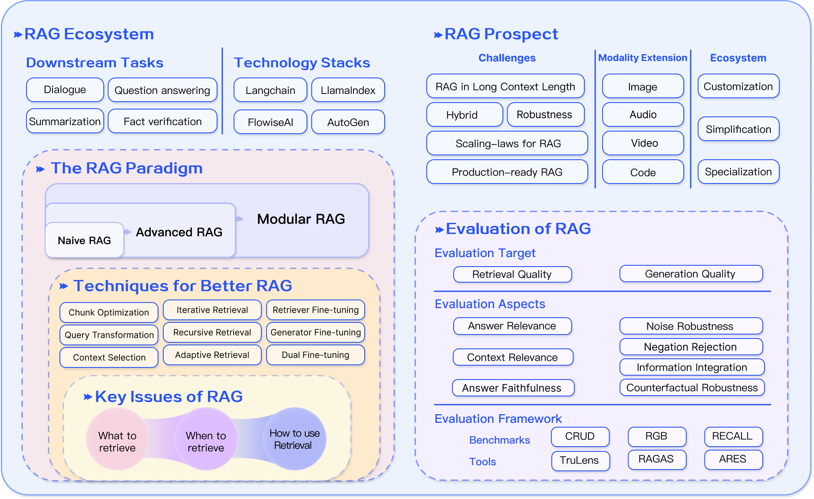

2025-1-17
Fake news, disinformation and misinformation in social media: a review
了解了review的大体结构：总体上，先引入问题，再介绍各种定义（e.g.何为Fake news）及研究方法（e.g. 论文来源 论文筛选原则），再介绍解决方案，最后进行总结；在解决方案部分，先列举各种方向，对引用的论文中的实现方法的说明较为简短。
Fake news检测方法分类：
- 基于新闻内容
- 基于社会情境（假新闻本身之外的数据）
- 结合上述方法 ### Fake news检测方法（AI相关）：
- DL
- ML
- NLP
A Survey on Automated Fact-Checking
这篇综述的结构为引入问题->引入各种定义->解决方案->总结
事实核查任务定义：
- Claim Detection（判断声明）
- Evidence Retrieval（检索证据）
- Verdict Prediction（判断）
- Justification Production（证明） ### Claim Detection：分类任务，将声明分为是否可检查或是否值得检查 ### Evidence Retrieval and Claim Verification：判断证据是否支持声明 ### Justification Production：证明过程需要遵循可读性合理性忠实性
Retrieval-Augmented Generation for Large Language Models: A Survey
RAG分类：
- Naive RAG
- Advanced RAG（检索前检索后检索中优化）
- Modular RAG（Agent化） ###
 ### 检索：
### 检索： - 检索源（数据结构 数据颗粒度）
- 索引优化（分块 元数据 结构化）
- 查询优化（扩大查询 转换查询 查询路由）
- 嵌入 ### 生成：
- 上下文管理（重排检索块 上下文选择）
- 微调 ### 增强：
- 迭代检索（反复搜索知识库）
- 递归检索（基于先前搜索结果多次改进检索）
- 自适应检索（由模型自行决定检索时机与内容） ### 评估RAG：
- 检索质量
- 生成质量 ### 前景：
- 长上下文问题
- 健壮性（噪音或矛盾信息）
- 与微调结合
- Scaling laws of RAG
- 提高检索效率
- 确保检索数据安全
- 多模态RAG（图片音频视频代码） ### 
2025-1-17
http://example.com/2025/02/19/2025-1-17/